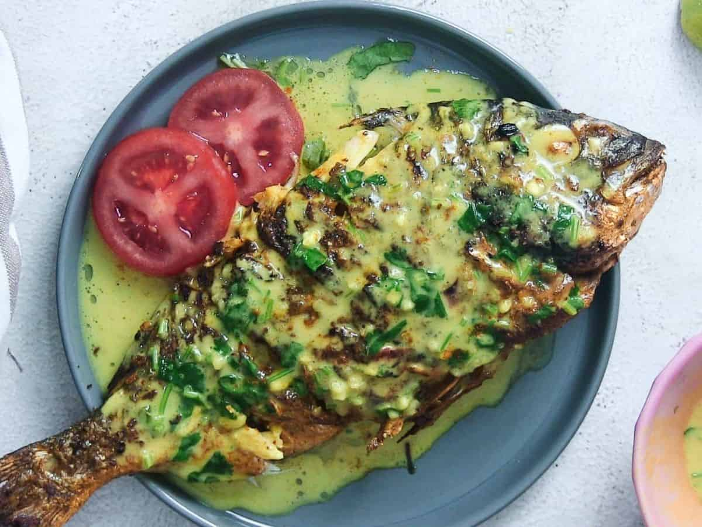

Samaki wa Kupaka

Description
Samaki wa Kupaka is a Swahili recipe for grilled fish in coconut sauce. This recipe is packed with flavor and uses simple everyday ingredients which are then blended or ground to a paste and then used to marinate and cook the fish. Serve it with some Kenyan ugali or Kachumbari for a complete meal.
Ingredients
- 2 large whole fish, about 3-4 pounds or 2 kgs each (such as tilapia, white snapper, red snapper, sea bass, or kingfish) - basically, any fish that doesn't have too many bones and can withstand grilling.
- minced garlic and ginger - use fresh garlic and ginger for the best flavor experience.
- finely sliced bird-eye chilli - use more chillis if you like it spicier.
- seasoning - turmeric powder, curry powder, garam masala, cardamom powder (iliki), black pepper and salt.
- oil- olive oil, or your preferred choice of cooking oil.
- coconut cream - one can coconut cream (or about 350 ml).
- tamarind sauce - alternatively, use lime juice or lemon juice instead.
- sliced lime wedges to garnish - this is totally optional.
Steps
- Clean the fish - descale it, remove the guts and clean it under running water. Use a kitchen cloth or paper towels to pat dry.
- prepare the marinade by mixing minced garlic, ginger, turmeric powder, olive oil (or your preferred choice of oil), chili, garam masala, salt, and black pepper.
- Marinate the fish - lay the fish on a chopping board and use a sharp knife to make diagonal slits or cuts on each side of the fish (known as mitai in Swahili). Using your hands or a spoon, spread a thick layer on both surfaces of the fish as well as between the slits. Marinate the fish for at least 30 minutes, or overnight for the best results!
- Set a skillet or a medium-sized pot on the stove-top under medium heat. (To save time, you can start grilling the fish while the sauce is still cooking).
- Add the oil, ginger, and garlic and fry for a minute. To the pot, add the black pepper, cardamom powder, turmeric powder, and curry powder then mix. Stir in the chili, salt, and coconut cream and simmer for about 15 minutes, stirring from time to time so it does not burn.
- Once the sauce is almost done, stir in the tamarind sauce and simmer for about a minute, switch off the heat, and cover it so it keeps warm.
- Set the grill or broiler on high. Use a brush to spread about a tablespoon of oil on the broiling rack or fish grilling basket.
- Place the marinated fish on a fish grill basket or on a suitable rack and grill both sides using a charcoal or electric grill for about 15 minutes (about 7 minutes on each side).
- To grill the fish on the broiler, preheat the broiler for about 10 minutes on high (the temperature should be about 480 degrees Fahrenheit or 250 degrees centigrade). Place the fish on a greased rack and position the rack about 3-5 inches (approx. 7-12cm) from the heat source.
- Once the fish is almost done, spoon or brush about 4-5 tablespoons of the sauce on each side of the fish and allow to grill for a further 1-2 minutes, or until the fish is almost cooked through and the juices run clear. This will also give the fish a lovely aroma.
- Take care not to overcook the fish, to prevent it from turning rubbery. You will know the fish is cooked when the flesh looks flaky and opaque all through.
- To serve, transfer the fish to a large plate or platter. Spoon over the hot coconut sauce and arrange some sliced lime wedges on the side (optional). If you like, you can squeeze one or two wedges so the lime juice flows on top.